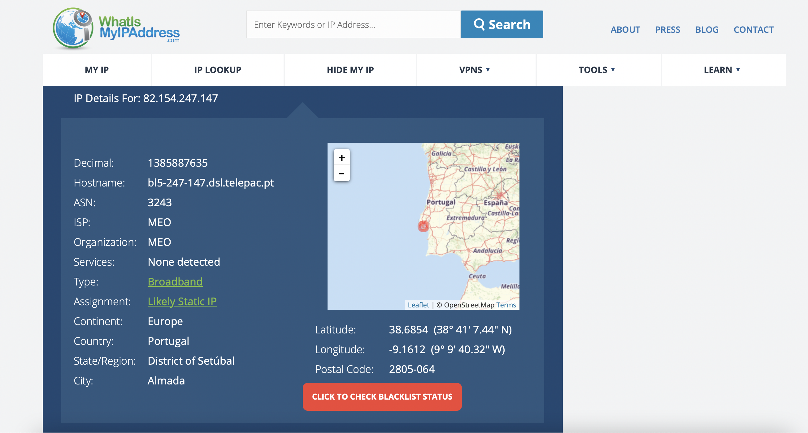
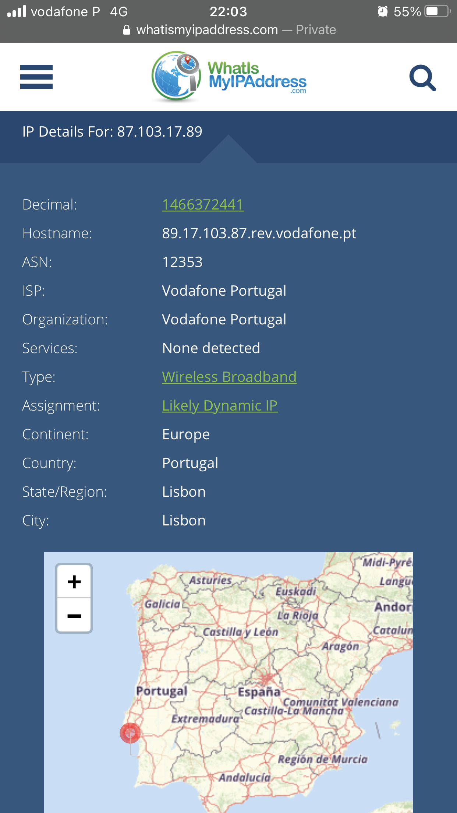
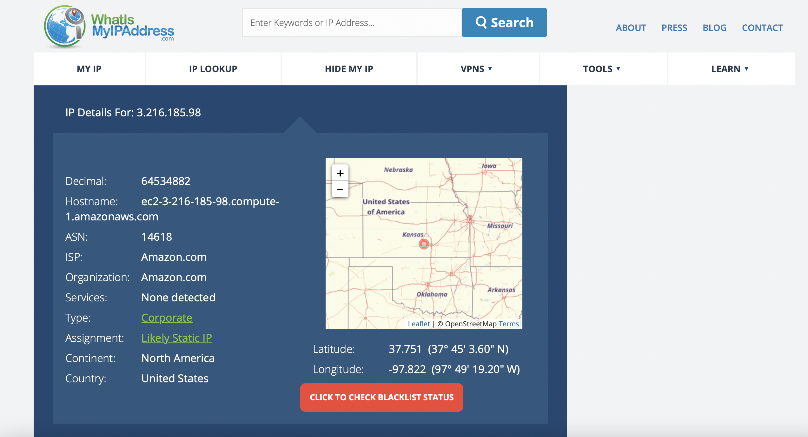
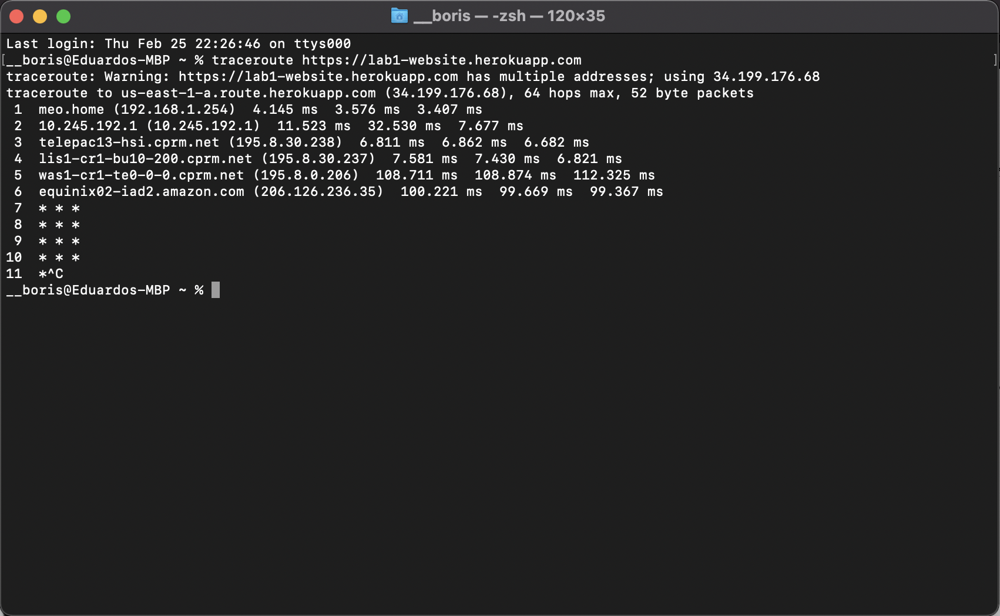
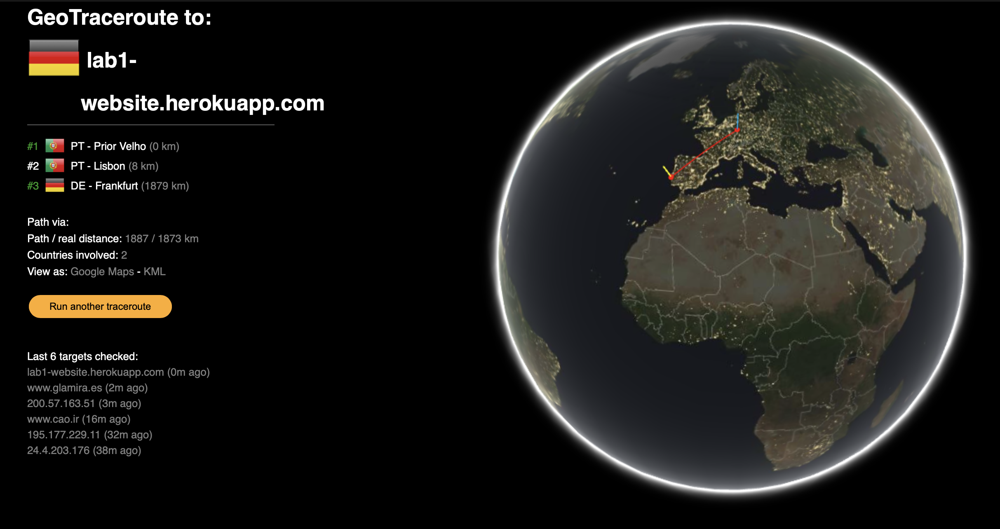
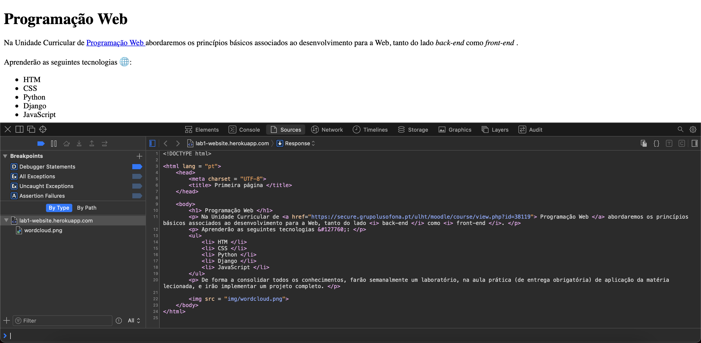
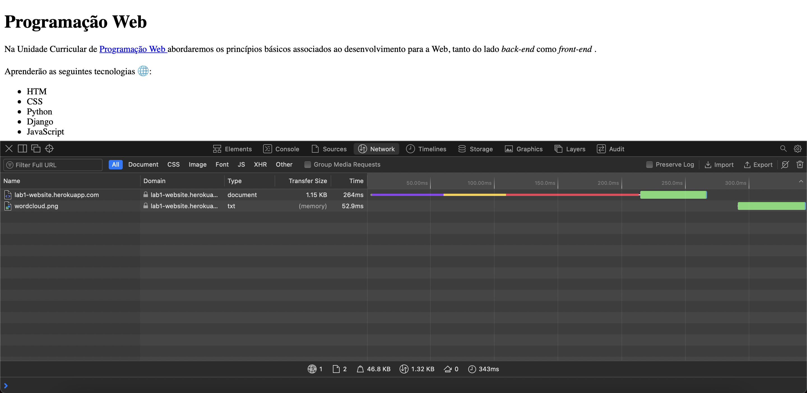

2 - Conhecer a Internet
Endereços IP
EX.1
Após utilizar o website What's My IP Address, descobri que o IP do meu computador é 82.154.247.147 e o do telemóvel 89.17.103.87, ambos localizados na zona de Almada/Lisboa, como podemos ver nas fotografias abaixo:
 
EX.2
Utilizando a mesma ferramenta do exercício anterior, descobri o IP do website, que é 3.216.185.98 e a sua localização, no Kansas, Estados Unidos da América, como podemos verificar pela fotografia abaixo:
Percurso
EX.1
Utilizando a "maneira clássica" de verificar o percurso dos pacotes transmitidos, obtive o seguinte resultado:
EX.2
Utilizando a ferramenta Geo Traceroute para mostrar a rota dos pacotes graficamente, obtive o seguinte resultado:
Podemos concluir assim, que o percurso dos pacotes do website começa no Prior Velho, depois passa por Lisboa, até chegar a Frankfurt.
3 - Acesso via HTTP à minha página Web
HTTP
EX.1
Ao selecionar a opção "ver código fonte", verifico que o código fonte apresentado é todo o código escrito e colocado no repositório do Gitub, como podemos ver pela imagem abaixo:
Inspect
EX.1
Ao clickar nas browser developer tools e selecionar a barra inspect, verifico que aparecem dois ficheios, correspondentes à soure code da página e à imagem lá inserida, com os respectivos tempos de transferência de ambos, como podemos ver pela seguinte imagem:
Podemos então concluir que foram transferidos 2 ficheiros, um do tipo document (o HTML) e outro do tipo txt (a imagem). Timings de espera e de descarga:
Ao selecionar cada ficheiro, quando vejo a sua preview, vejo o conteudo de cada um, isto é, ao selecionar a preview do HTML vejo o "código" do html e ao selecionar a preview da imagem, vejo a imagem em si; quando vejo o header, vejo toda a informação relacionada com o website, como o IP, o status, o URL, com o pedido do cliente (neste caso, eu), como a versão do protocolo HTTP e o browser que estou a usar e o host. Também vejo a informação relacionada com o a resposta do servidor, como a data em que foi dada, a versão do protocolo HTTP e o tipo de servidor; quando vejo o timing, é me fornecida uma informação detalhada de todo o tempo que foi necessário para fazer a transferência do webiste e no que é que o tempo foi investido.